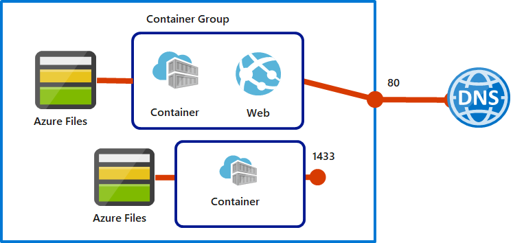

The top-level resource in Azure Container Instances is the container group . A container group is a collection of containers that get scheduled on the same host machine. The containers share a lifecycle, resources, local network, and storage volumes.
Things to know about container groups
Let's review some of details about container groups for Azure Container Instances.
-
A container group is similar to a pod in Kubernetes. A pod typically has a 1:1 mapping with a container, but a pod can contain multiple containers. The containers in a multi-container pod can share related resources.
-
Azure Container Instances allocates resources to a multi-container group by adding together the resource requests of all containers in the group. Resources can include items such as CPUs, memory, and GPUs.
-
There are two common ways to deploy a multi-container group: Azure Resource Manager (ARM) templates and YAML files.
-
ARM template . An ARM template is recommended for deploying other Azure service resources when you deploy your container instances, such as an Azure Files file share.
-
YAML file . Due to the concise nature of the YAML format, a YAML file is recommended when your deployment includes only container instances.
-
-
Container groups can share an external-facing IP address, one or more ports on the IP address, and a DNS label with an FQDN.
-
External client access . You must expose the port on the IP address and from the container to enable external clients to reach a container in your group.
-
Port mapping . Port mapping isn't supported because containers in a group share a port namespace.
-
Deleted groups . When a container group is deleted, its IP address and FQDN are released.
-
Configuration example
Consider the following example of a multi-container group with two containers.

The multi-container group has the following characteristics and configuration:
- The container group is scheduled on a single host machine, and is assigned a DNS name label.
- The container group exposes a single public IP address with one exposed port.
- One container in the group listens on port 80. The other container listens on port 1433.
- The group includes two Azure Files file shares as volume mounts. Each container in the group mounts one of the file shares locally.
Things to consider when using container groups
Multi-container groups are useful when you want to divide a single functional task into a few container images. Different teams can deliver the images, and the images can have separate resource requirements.
Consider the following scenarios for working with multi-container groups. Think about what options can support your internal apps for the online retailer.
-
Consider web app updates . Support updates to your web apps by implementing a multi-container group. One container in the group serves the web app and another container pulls the latest content from source control.
-
Consider log data collection . Use a multi-container group to capture logging and metrics data about your app. Your application container outputs logs and metrics. A logging container collects the output data and writes the data to long-term storage.
-
Consider app monitoring . Enable monitoring for your app with a multi-container group. A monitoring container periodically makes a request to your application container to ensure your app is running and responding correctly. The monitoring container raises an alert if it identifies possible issues with your app.
-
Consider front-end and back-end support . Create a multi-container group to hold your front-end container and back-end container. The front-end container can serve a web app. The back-end container can run a service to retrieve data.